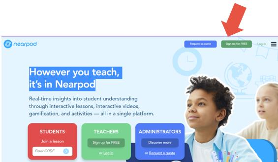
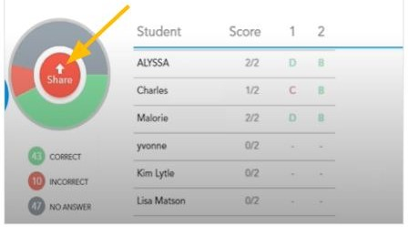

Nearpod este un instrument interactiv de clasă pentru profesori pentru a angaja elevii cu lecții interactive. Nearpod este un software de instruire premiat care implică copiii cu experiențe interactive de învățare. Cu Nearpod, copiii au abilitatea de a participa la lecții care conțin realitatea virtuală, obiecte 3D, simulări PhET și multe altele. Software-ul interactiv facilitează vocea copilului prin activități precum întrebări deschise, sondaje, chestionare, consiliere colaborativă și multe altele! Copiii vor învăța în timp ce se distrează, copiii se alătură experiențelor de învățare sincronizate conduse de profesorii lor sau învață în propriul ritm, experiențele de învățare sunt create de profesori sau sunt selectate dintr-un catalog de peste 6.500 de experiențe din biblioteca de lecții Nearpod, copiii contribuie cu feedback instantaneu prin intermediul unor funcții de evaluare, cum ar fi chestionare, întrebări deschise, sondaje, instrumente de desenare și multe altele, copiii sunt introduși în conținut prin intermediul unor medii dinamice, care includ călătoriile pe teren VR, obiecte 3D, simulări PhET, videoclipuri BBC, Microsoft Sways și multe altele.
←

←
